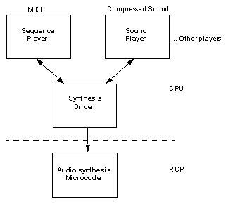

<!DOCTYPE HTML PUBLIC "-//IETF//DTD HTML//EN">
<html>
<BASE TARGET="main">
<head>
<title>N64 Programming Manual Chapter 17</title>
</head>
<body bgcolor="#FFFFFF">

<table border=0><tr><td><a target="_top" href="../pro16/index16.4.html"></a></td>
<td>&nbsp;</td>
<td><a target="_top" href="../pro17/index17.1.html"></a></td></tr></table>
<P>


<b><font face="arial" color="#29296b">Overview</font></b>

<P>
<font face="arial" size="-1" color="#000000">
The Nintendo 64 Audio Library is a lightweight library of functions. It provides game developers with the ability to interactively synthesize and manipulate audio on the Nintendo 64. It provides support for both sampled sound playback and Wavetable synthesis. This is accomplished with four software objects: the Sound Player, the Sequence Player, the Synthesis Driver, and the Audio Synthesis Microcode. These are shown in the figure below,  <a target="main" href="../pro17/overview.html#fig17-1">“Audio Software Architecture."</a>

<ul>
<li>The Sound Player is useful for the playback of single sample sound effects or streamed audio. It is capable of playing back either ADPCM compressed sounds, or uncompressed 16 bit sound.
<P>
<li>The Sequence Player can exist in either of two types. The first type plays back Type 0 MIDI sequence files and the second type plays back a format of compressed MIDI unique to the Nintendo 64. In both cases, the sequence player handles sequence, instrument bank, and synthesizer resource allocation, sequence interpretation, and MIDI message scheduling.
</ul>

<b>Note:</b> Both the Sequence Player and the Sound Player are clients of the Synthesis Driver. The Driver can support an arbitrary number of clients, including multiple Sound and Sequence Players.

<ul>
<li>The Synthesis Driver is responsible for creating audio Command Lists, which are packaged into tasks by the Application program and passed on to the Audio Synthesis Microcode. It allows Driver clients to assign wave tables to synthesizer voices, and control the playback parameters. 
<P>
<li>The Audio Synthesis Microcode processes the tasks passed to it by the application and synthesizes stereo 16- bit samples, which the application in turn passes to the Audio DACs. 
</ul>

<P>
This chapter contains descriptions of the Sound Player, Sequence Player, and Synthesis Driver APIs . Many application programmers will be satisfied with the interfaces provided by the Sound and Sequence Players. Most of the Synthesis Driver API is intended for programmers who want to create their own players (see the <a target="_top" href="../pro17/index17.5.html">Section 17.5, “Writing Your Own Player”</a>  for more information); however, all programmers should understand certain functions essential for the creation of audio Command Lists.


<a name="fig17-1"></a>
<P>
<b>Audio Software Architecture</b>
<p>
<table border=0 align="center">
<tr><td>
</tr></td></table>
<P>

The following sections outline the data structures and API calls that are necessary to make use of the audio library. The data structure definitions and function prototypes for the calls described are in the include file <i>libaudio.h,</i>  which is part of the software release. Also included as a part of the software release are reference (man) pages for each of the function calls. 
<P>

<TABLE BORDER=0 CELLSPACING=0 CELLPADDING=0 ALIGN="center">
         <TR><td align="center"><font face="Arial" size="-2" color="#29296B">
Copyright &copy; 1999<br>
Nintendo of America Inc. All Rights Reserved<BR>
Nintendo and N64 are registered trademarks of Nintendo<br>
Last Updated January, 1999</FONT>
</TD></TR></TABLE>
</body>
</html>